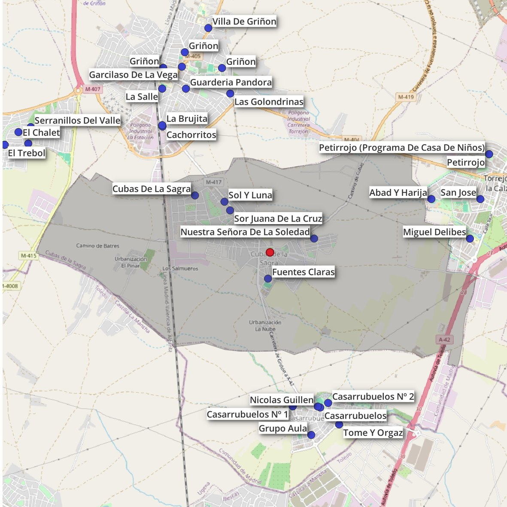

Puntos de interés en el territorio parroquial
Parroquia San Andrés Apóstol (Cubas de la Sagra) · Arciprestazgo de Griñón
Entidades religiosas no católicas
No hay ninguna entidad religiosa no católica en el territorio de esta parroquia.
Centros educativos

4 centros educativos en el territorio de la parroquia (público: 4).
| Centro | Tipo | Titularidad | Domicilio | Web |
|---|---|---|---|---|
| FUENTES CLARAS | Colegio de educación infantil y primaria | Público | Calle San Isidro, s/n, 28978 Cubas de la Sagra | Página web |
| NUESTRA SEÑORA DE LA SOLEDAD | Colegio de educación infantil y primaria | Público | Calle Francisco de Quevedo, 3, 28978 Cubas de la Sagra | Página web |
| SOL Y LUNA | Escuela infantil-casa de niños | Público | Calle Retamar, s/n, 28978 Cubas de la Sagra | Página web |
| SOR JUANA DE LA CRUZ | Instituto de educación secundaria | Público | Calle los Almendros, s/n, 28978 Cubas de la Sagra | Página web |
Fuente: registro de centros educativos de la Comunidad de Madrid. Solo se recogen los centros de alta.